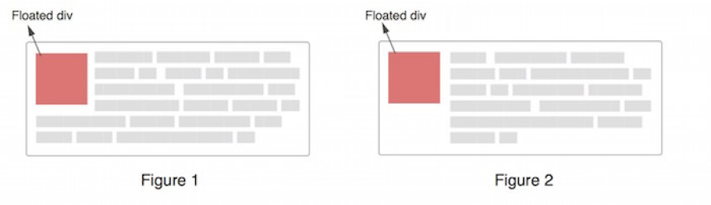

CSS中的BFC
BFC是块级格式化上下文。它是由于块级元素设置了某些属性而形成的一个独立的区域。在这个区域中，它里面的布局不会影响到外面元素的布局，反之也一样。
创建一个BFC
只需要满足下面条件之一就能创建一个BFC
- 根元素
- float属性不为none
- position为absolute或fixed
- display为inline-block, table-cell, table-caption, flex, inline-flex
- overflow不为visible
BFC布局规则
- 内部的Box会在垂直方向，一个接一个地放置。
- Box垂直方向的距离由margin决定。属于同一个BFC的两个相邻Box的margin会发生重叠
- 每个元素的margin box的左边， 与包含块border box的左边相接触(对于从左往右的格式化，否则相反)。即使存在浮动也是如此。
- BFC的区域不会与float box重叠。
- BFC就是页面上的一个隔离的独立容器，容器里面的子元素不会影响到外面的元素。反之也如此。
- 计算BFC的高度时，浮动元素也参与计算
BFC的用处
使用BFC来防止外边距折叠
属于同一个BFC的两个相邻的BOX的margin上下方向会重叠，如果不想让两个Box的margin重叠则可以将这两个Box放在不同的BFC中。
使用BFC来包含浮动
在BFC的布局规则中的第六条：
计算BFC的高度时，浮动元素也参与计算。
所以可以将父元素变成一个BFC从而来清除浮动：
1 | <style> |
或者最常见的方法就是写一个clearfix的类：
1 | .clearfix{ |
使用BFC来防止文字环绕
有时候一个浮动div周围的文字环绕着它，代码如下：
1 | <div class="container"> |
但是在某些案例中这并不是可取的，我们想要的是外观跟下图中的右图一样的。

为了解决这个问题，我们可以使用外边距，只要给p设置大于div宽度的margin-left就可以，但是我们也可以使用一个BFC来解决。
在BFC的布局规则中的第一条：BFC的区域不会与float box重叠。因此我们可以将p元素设置成一个BFC：给p元素添加一个overflow: hidden来实现。
在多列布局中使用BFC
可以用多种方式解决多列布局，比如圣杯、双飞翼还可以用BFC。比如代码如下：
1 | <style> |
因为BFC的区域不会与float box重叠，所以将类为main的元素设置为BFC。